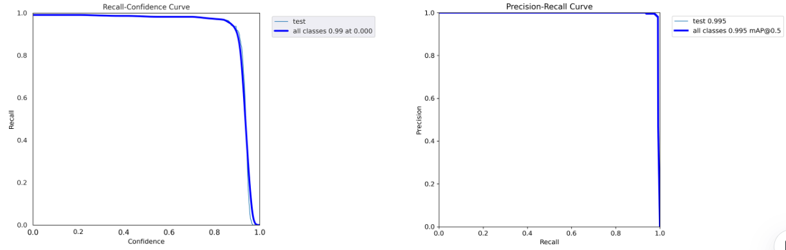
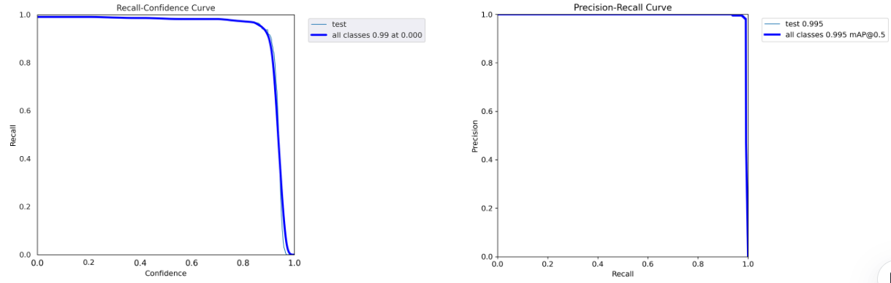

Leading a national-level Student Research Training Program (SRTP) titled "Vision-Based Object Tracking for UAV," I orchestrated the development of a complete UAV system by integrating key components: mapping, planning, target recognition, localization, and control. Building upon FastLab's Elastic tracker as a foundation, I have enhanced the robustness of the recognition algorithm.
这里是一些文本内容。

 
